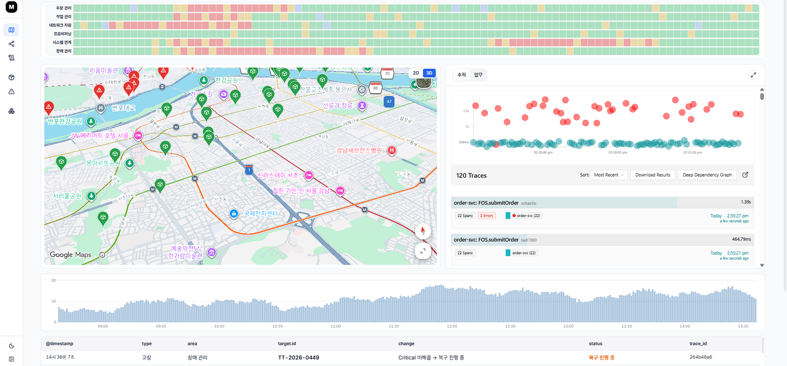

1. At a Glance
This demo covers a telecom carrier's two core business functions — ordering (new activation) and fault management. It shows a method of layering an ontology and agents thinly on top of the legacy systems a real telecom carrier uses, leaving them as they are.
- Order management — Handles the new activation of bundled (converged) fixed-mobile products from start to finish.
- Fault management — Diagnoses and resolves line configuration and network faults.
- Ontology + simulation — Analyzes the causes of problems arising in both functions, runs solutions in advance, and chooses the action.
2. Legacy Systems Used
Telecom ordering, activation, billing, and line management have long been handled by the specialized systems below. This demo does not replace them; it uses them as they are.
| System | Role in This Demo |
|---|---|
| TIBCO FOS | Order orchestration (Fulfillment Order Suite) that breaks an order into pieces and coordinates them in sequence |
| Oracle Siebel | Order capture for customers and products (CRM / order capture) |
| Oracle BRM | Billing (Billing and Revenue Management) that handles rating and charging |
| Oracle ASAP | Activation that actually turns services on at the equipment |
| Oracle MetaSolv | Configuration and inventory of line and network resources |
3. Order Management — New Activation of a Bundled Fixed-Mobile Product
Because a bundled fixed-mobile product ties several services into a single order, multiple legacy systems mesh together in sequence. It shows, as one flow, how a captured order is decomposed, how the line is configured, and how it is actually activated and carried through to billing.
Order Capture
Siebel receives the bundled-product order.
Order Decomposition & Coordination
FOS breaks the order into detailed tasks and sequences them.
Line Configuration
MetaSolv assigns line and network resources.
Activation
ASAP actually turns the service on at the equipment.
Billing Registration
BRM applies the rate plan and starts billing.
4. Fault Management — Resolving Line and Network Faults
Activation is not the end. During operations, line problems and network faults arise. This demo also sets up fault management that resolves line configuration and network faults.
- Incident intake — Receives a network fault or line problem as a fault incident.
- Cause tracing — Follows which lines, resources, and services are entangled to narrow down the cause.
- Remediation — Resolves the problem and traces back to the affected orders and services.
5. Binding It Together with an Ontology
Order management and fault management are each expressed as an ontology. Because how orders, services, line resources, and incidents connect to one another is revealed on a single screen, both people and agents see "which orders and customers this fault spreads to" as the same picture.





6. Problem → Root Cause Analysis → Simulation → Decision-Making
A variety of problems arise in order and fault management. For example, these:
- Delayed fault incident handling — Fault response is slow.
- Network fault — A line or resource problem cuts off service.
- Order fallout — Orders fail midway through activation and pile up.
JuneAI analyzes the causes of these problems with the ontology and runs possible solutions in advance through simulation. The agent then, based on those results, chooses the optimal action and supports decision-making.
Legacy left as it is, the ontology layered thinly on top. It analyzes problems in order and fault management down to their root cause, simulates solutions in advance, and chooses the best action.